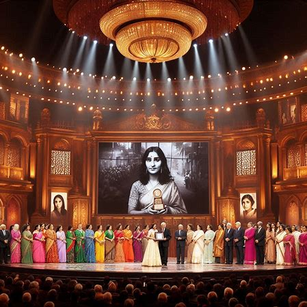

Whispering Anklets ~ Prompt Rachna
Created by
Avukyt & Yatharth
 In a remote village where traditions echo through time, 17-year-old Meera quietly walked with humility—and a secret magic that set her apart. Her cherished silver anklets, gifts from her late mother, shimmered with more than mere metal; they held whispers of ancient dreams.
In a remote village where traditions echo through time, 17-year-old Meera quietly walked with humility—and a secret magic that set her apart. Her cherished silver anklets, gifts from her late mother, shimmered with more than mere metal; they held whispers of ancient dreams.
 In a remote village where traditions echo through time, 17-year-old Meera quietly walked with humility—and a secret magic that set her apart. Her cherished silver anklets, gifts from her late mother, shimmered with more than mere metal; they held whispers of ancient dreams.
In a remote village where traditions echo through time, 17-year-old Meera quietly walked with humility—and a secret magic that set her apart. Her cherished silver anklets, gifts from her late mother, shimmered with more than mere metal; they held whispers of ancient dreams.
.jpeg) Each step of Meera’s journey echoed with a gentle chime—a melody that carried stories of forgotten women. The anklets, as if imbued with magic, whispered secrets of the past into her heart.
Each step of Meera’s journey echoed with a gentle chime—a melody that carried stories of forgotten women. The anklets, as if imbued with magic, whispered secrets of the past into her heart.
.jpeg) In the noisy market and quiet alleys alike, villagers couldn’t hide their disapproval. They believed silence suited a girl—any sound was a defiant disruption of the norm.
In the noisy market and quiet alleys alike, villagers couldn’t hide their disapproval. They believed silence suited a girl—any sound was a defiant disruption of the norm.
 Tradition demanded sacrifice. Forced to abandon school and prepare for marriage, Meera’s dreams were meant to be locked away—much like the cherished secrets hidden in her anklets.
Tradition demanded sacrifice. Forced to abandon school and prepare for marriage, Meera’s dreams were meant to be locked away—much like the cherished secrets hidden in her anklets.
.jpeg) That night, as the village slept, the anklets’ whispers grew bold. They led Meera to a hidden chamber within the creaking walls of the old haveli—a sanctuary where the past could finally speak.
That night, as the village slept, the anklets’ whispers grew bold. They led Meera to a hidden chamber within the creaking walls of the old haveli—a sanctuary where the past could finally speak.
.jpeg) In the secret chamber, the air pulsed with the energy of the past. Portraits of remarkable women materialized, each bearing the weight of dreams stifled by time. Their faces spoke of battles fought in silence and triumphs buried under tradition.
In the secret chamber, the air pulsed with the energy of the past. Portraits of remarkable women materialized, each bearing the weight of dreams stifled by time. Their faces spoke of battles fought in silence and triumphs buried under tradition.
.jpeg) As the portraits shared their life stories—tales of passion, sacrifice, and resilience—Meera felt her resolve solidify. Their voices mingled with her own hopes, urging her to rewrite the narrative for every silenced woman.
As the portraits shared their life stories—tales of passion, sacrifice, and resilience—Meera felt her resolve solidify. Their voices mingled with her own hopes, urging her to rewrite the narrative for every silenced woman.
 The whispers became a call to arms. With the legacy of the forgotten echoing inside her, Meera resolved to reclaim her voice and, through it, the voices of generations past.
The whispers became a call to arms. With the legacy of the forgotten echoing inside her, Meera resolved to reclaim her voice and, through it, the voices of generations past.
.jpeg) Returning to school was both a rebellion against silence and a journey back to self. Meera’s footsteps resonated a powerful message—a declaration that learning and freedom were not privileges, but rights.
Returning to school was both a rebellion against silence and a journey back to self. Meera’s footsteps resonated a powerful message—a declaration that learning and freedom were not privileges, but rights.
.jpeg) Emboldened by history and her newfound purpose, Meera launched an anonymous podcast called “Voices Unheard.” In every recorded session, she wove together the stories of the silenced, blending history with magic and truth.
Emboldened by history and her newfound purpose, Meera launched an anonymous podcast called “Voices Unheard.” In every recorded session, she wove together the stories of the silenced, blending history with magic and truth.
 As her voice traveled far beyond her village, the resonance of “Voices Unheard” ignited a movement. Girls and women across India embraced the sound of chimes, proudly wearing anklets as symbols of their own strength.
As her voice traveled far beyond her village, the resonance of “Voices Unheard” ignited a movement. Girls and women across India embraced the sound of chimes, proudly wearing anklets as symbols of their own strength.
.jpeg) Not everyone welcomed the new dawn. As the village leaders and skeptics sought to muzzle Meera’s
Not everyone welcomed the new dawn. As the village leaders and skeptics sought to muzzle Meera’s

The fire of change reached the highest echelons of recognition. Meera became the first girl from her village to receive national acclaim. On stage, amidst the applause and flashing cameras, her journey was celebrated as a revolution of hearts.
 The ripple of Meera’s defiant steps transformed into a resounding tide. Across India, girls began to wear anklets—not as a burden, but as a badge of honor and resistance. Each tinkle of silver celebrated a legacy reborn.
The ripple of Meera’s defiant steps transformed into a resounding tide. Across India, girls began to wear anklets—not as a burden, but as a badge of honor and resistance. Each tinkle of silver celebrated a legacy reborn.
 Now a trailblazer in her own right, Meera’s journey epitomizes the healing of generational wounds. Her story reminds us that the voices of the past can illuminate the path to a future free from silence—where every step resonates with empowerment.
Now a trailblazer in her own right, Meera’s journey epitomizes the healing of generational wounds. Her story reminds us that the voices of the past can illuminate the path to a future free from silence—where every step resonates with empowerment.
Thank You ~ They Silenced us with rules. We speak through echoes